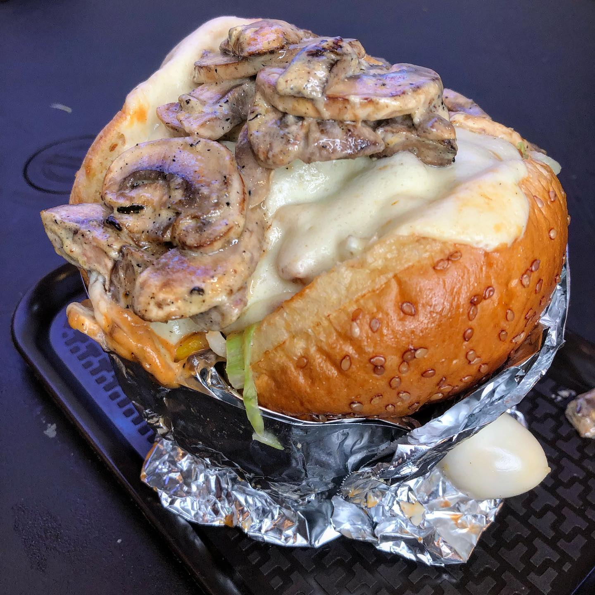

Volver
REY BURGER @reyburgercali
Rey Burger es un restaurante de comida rápida de Cali, tiene sedes en Calicanto, Santa Elena y la Selva, nación como un restaurante de hamburguesas, sin embargo también es reconocido por sus salchipapas
Publicado el 17/02/2022 a las 5:40pm
LA CHAMPIREINA 
En el menú de este restaurante se encuentra la hamburguesa champireina, que como su nombre lo indica, contiene champiñones, también tiene lechuga, tomate, maicitos, tocineta, salsas, doble carne, ripio de papa y mucho queso, acompañado de un huevo de codorniz, a un costo de 16.000 pesos Colombianos se puede disfrutar de esta deliciosa hamburguesa en un sitio acogedor, con buena compañía y excelente música.